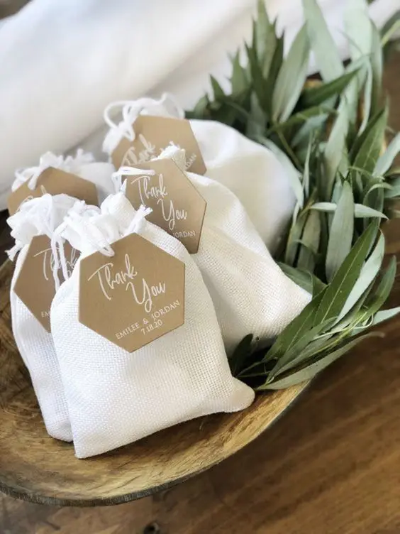
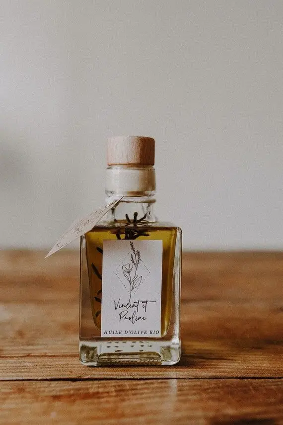
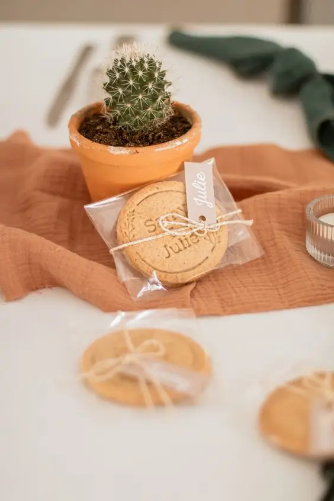
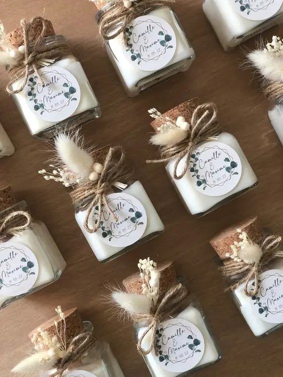
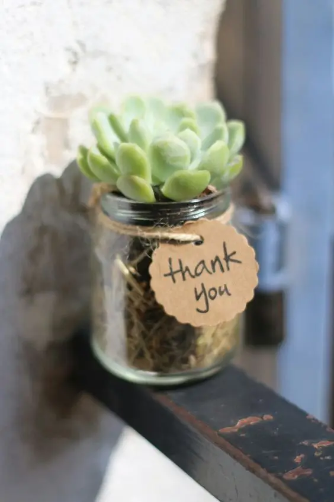
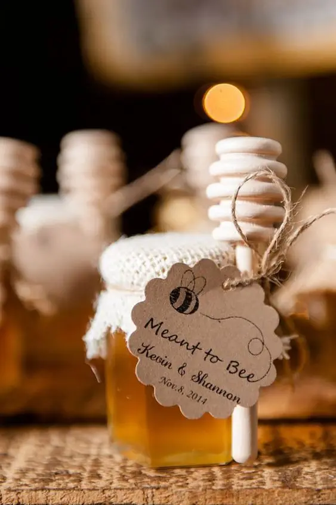
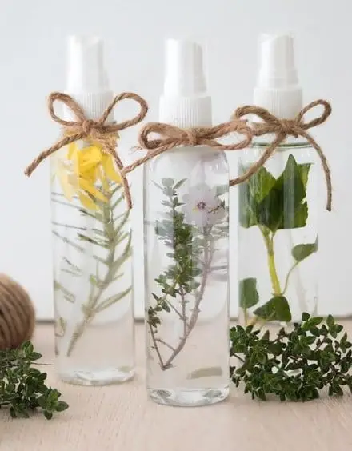
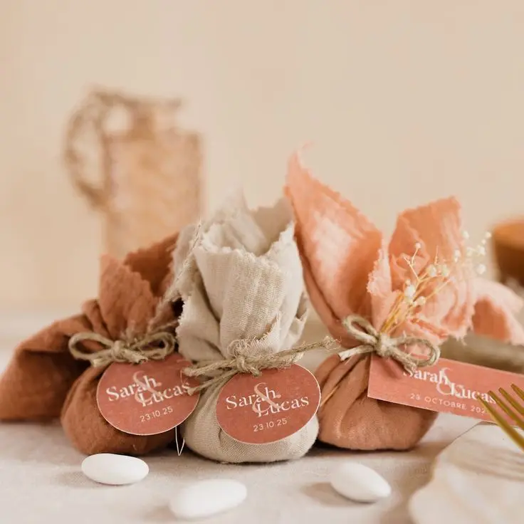

Le grand jour approche, et les préparatifs de mariage sont souvent axés sur les mariés. Cependant, il est essentiel de ne pas négliger ceux qui partageront cette journée spéciale avec vous : les invités. Offrir des cadeaux de mariage aux personnes présentes à cette célébration mémorable va bien au-delà de la simple tradition ; c’est une façon chaleureuse et significative de montrer votre gratitude à vos invités et de créer des souvenirs durables.

Pourquoi offrir des cadeaux à vos invités ?
Remercier ses invités en leur offrant un cadeau est une façon de montrer votre reconnaissance face à leur présence à vos côtés afin de partager cette journée exceptionnelle. Certains de vos convives consacrent parfois du temps et de l’énergie pour vous aider à réaliser le plus beau jour de votre vie. Ce petit cadeau est donc une manière sincère d’exprimer votre gratitude tout en créant une atmosphère de partage et de reconnaissance mutuelle.
Les cadeaux de mariage sont aussi des souvenirs uniques de cette journée inoubliable. Choisis et créés avec soin, ces cadeaux sont une manière idéale de remémorer à vos invités les moments chers que vous avez passé et leur rappeler la joie partagée lors de votre union.
Par ailleurs, les mariages sont généralement l’occasion de réunir famille et amis. Offrir des cadeaux personnalisés est donc un bon moyen pour créer une connexion avec vos proches et leur exprimer à quel point ils comptent pour vous.
Des souvenirs personnalisés

Une touche méditerranéenne
Offrir une petite fiole d’huiles d’olive en verre charmera à coup sûr vos invités. Le tout accompagné d’une petite étiquette personnalisée avec vos noms ou initiales et la date de votre jour inoubliable afin de parfaire ces adorables petits contenants. Ces fioles sont donc une petite attention, qui symbolise d’autant plus la paix et la vie.

Une surprise gourmande
Exit les traditionnelles dragées, faite place aux sablés personnalisés. Tamponné par la mention classique « just married » ou avec vos noms ou la date du jour-J pour être plus original, ces cadeaux sont la garantie de voir vos convives retourner chez eux avec un sourire aux lèvres.

Un cadeau parfumé
Les bougies parfumées font partie de ces petits présents qui font toujours plaisir. Symbolisant le romantisme par excellence, offrir une bougie, cadeau intemporel, à vos invités leur permettra à la fois de parfumer leur chez eux tout en se remémorant le jour de votre union.

Un peu de verdure
Pourquoi ne pas laisser une petite touche de green à vos invités ? Offrir un petit cactus est idéal pour les amoureux de la nature. Peu coûteux et facile à entretenir ces petites plantes sont une excellente idée de cadeaux, car un peu de verdure chez soi ne fait pas de mal.

Une douceur sucrée
Symbole de douceur, offrir un petit pot de miel est une manière poétique de partager avec vos invités vos promesses d’amour. Tout en étant personnalisé par des étiquettes créées selon vos envies, ce petit plaisir sucré ravira vos invités et leurs papilles.

Un cadeau essentiel
Offrir une fiole d’huiles essentielles est un bon moyen d’allier plaisir de recevoir et bien-être. Chaque plante ayant sa propre vertu et signification, libre à vous de choisir la fleur ou plante de votre choix qui apportera une valeur sentimentale à votre cadeau aux yeux de vos invités.
Les dragées sous un autre format !
Les dragées, confectionnées traditionnellement avec des amandes enrobées de sucre, symbolisent depuis longtemps l’abondance et la fertilité. Mais aujourd’hui, ces petites douceurs prennent différentes formes, couleurs et saveurs, pour le plaisir de tous. Cette gourmandise demeure un classique incontournable, garantissant que vos convives emportent avec eux un souvenir sucré de votre mariage.

En tant que wedding planner et wedding designer basé en région bordelaise, je me spécialise dans des prestations entièrement adaptées à vos besoins et envies. Je suis à votre disposition pour prodiguer des conseils éclairés et mettre en œuvre mes services sur mesure y compris la conception personnalisée des cadeaux d’invités afin de faire de votre journée un souvenir inoubliable !
Lovely Day Event c'est plusieurs types de prestations
L'organisation de mariage
Je vais intervenir sur toutes les étapes de vos préparatifs et vous guider dans vos choix. Je suis force de proposition pour que votre mariage ne ressemble qu’à vous.
Coordination le jour J
Je serai le chef d’orchestre pour gérer les différents prestataires, la mise en place de votre décoration et le déroulement de cette belle journée.
Décoration de mariage
Créative et passionnée, je suis certifiée Wedding Designer et je conçois une ambiance scénographique qui correspond au thème de votre mariage. La décoration est comprise dans l'accompagnement Signature, ou proposée en option avec la coordination du jour J.